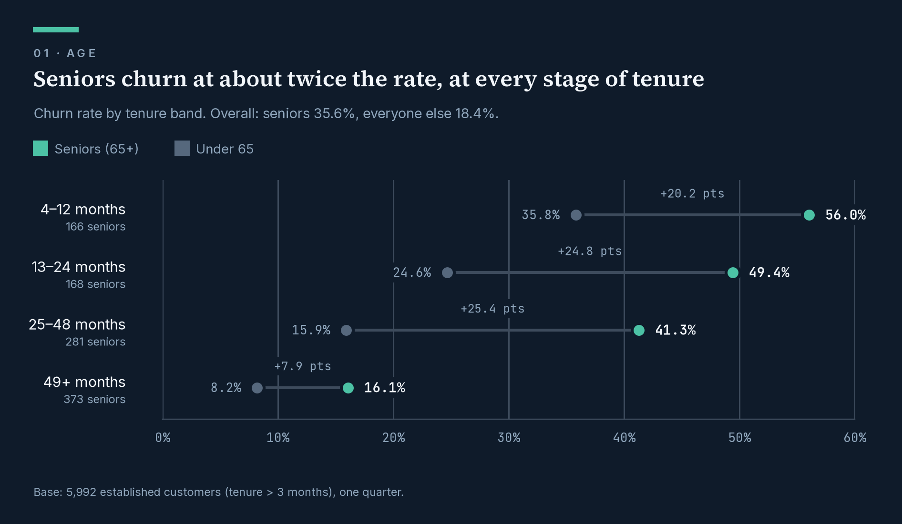
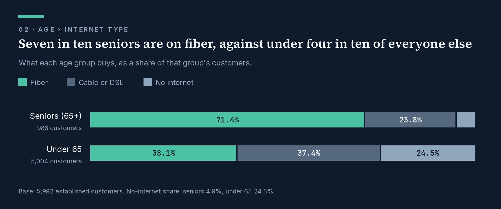
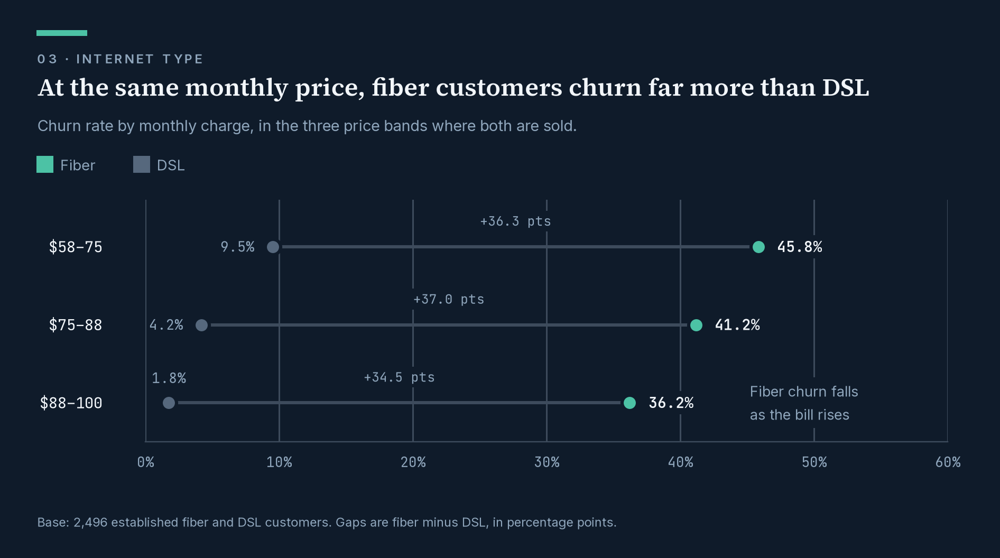
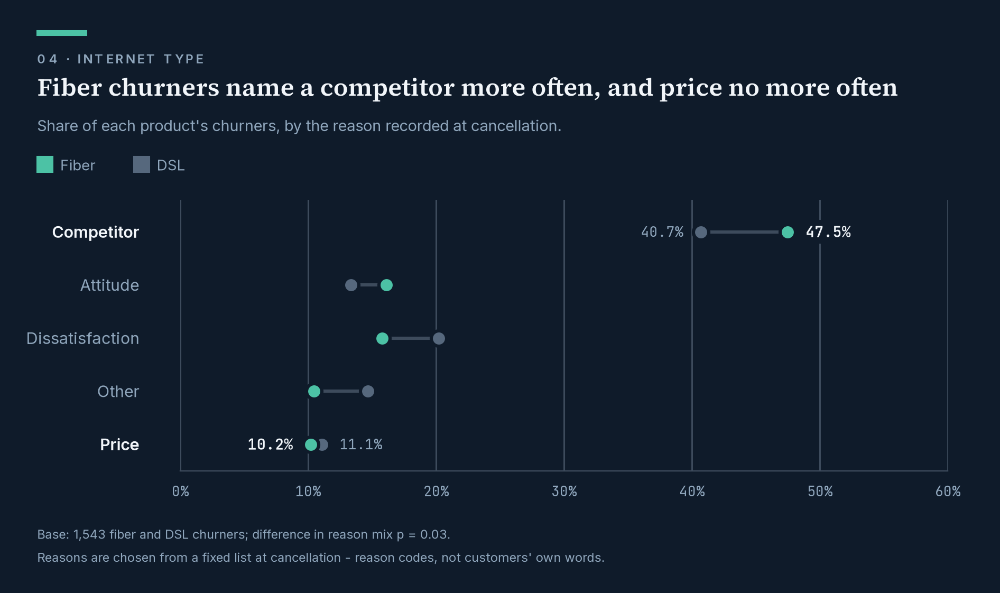
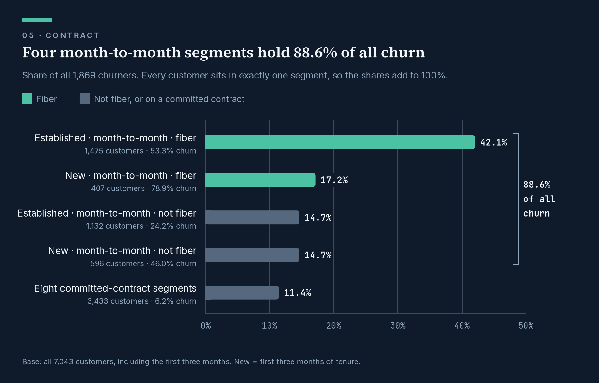
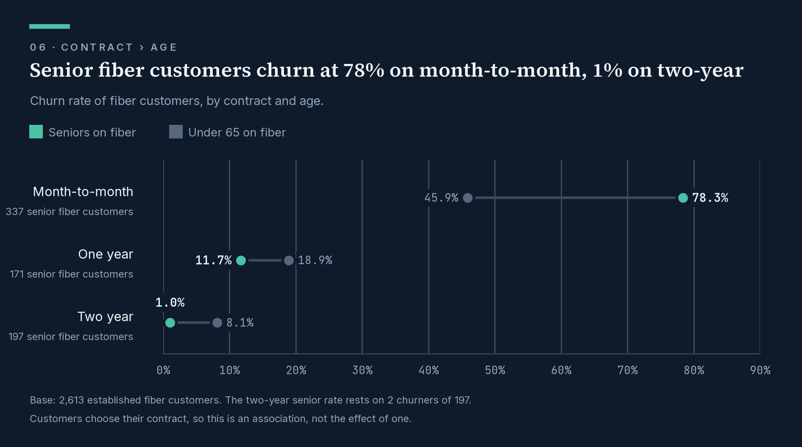
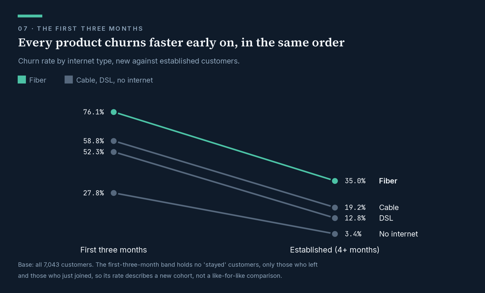
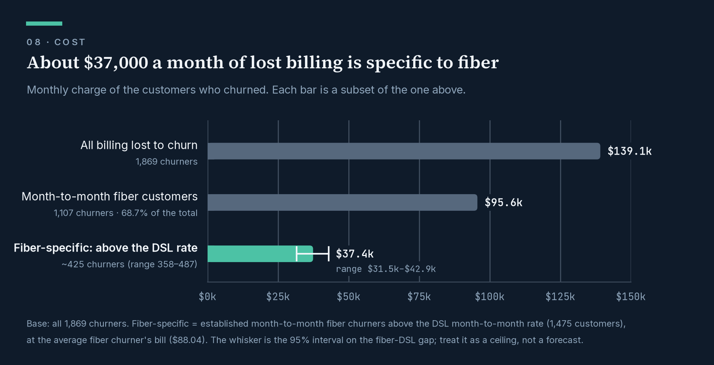

Fiber customers on month-to-month contracts are two-thirds of the billing lost to churn — and price is not why they leave
Bottom line
More than two of every three dollars of monthly billing lost to churn this quarter left with one kind of customer: fiber broadband on a month-to-month contract. These customers churn at over twice the DSL rate on the same contract, at the same age, from their first month, and even at the same monthly price. When they leave, they name a competitor more often than DSL customers do and price no more often.
Age sharpens the picture. Seniors churn at twice the rate of everyone else, and seven in ten of them are on fiber. Their extra churn appears only on month-to-month contracts, where 337 senior fiber customers churn at 78.3%.
Fiber churn should not be treated as a pricing problem. The work is to find out what competitors are offering fiber customers that we are not.
The asks (set out with three more under Possible recommendations)
- Do not answer fiber churn with blanket discounts. Nothing in this data supports it: at the same price, fiber customers churn far more than DSL customers, and within fiber, churn falls as the bill rises.
- Pull the competitor detail behind fiber cancellations: which competitor, and which device or offer, from cancellation records or retention-call notes. This dataset holds reason codes but no customer verbatims, and the story cannot be closed without them.
- Test a one-year contract offer on month-to-month fiber accounts, with a holdout group, starting with senior fiber customers. Committed fiber customers churn at about a third of the month-to-month rate (16.8% against 53.3%), and for seniors the difference is starker (11.7% against 78.3%). But customers who choose contracts may differ from those who don’t. Only a test can tell those two explanations apart.
What this covers
This memo follows churn through three questions in turn: who leaves (age), what they bought and why price does not explain it (internet type), and what was holding them (contract). It then covers how early churn starts, what leaving it alone costs, and the possible recommendations that follow.
The data is one quarter of a telecom customer book: 7,043 customers, of whom 1,869 churned (26.5%). It is a single snapshot with no time dimension, so every finding here is an association measured across customers, not a trend over time. Two populations sit inside it and are reported separately where it matters: 1,051 customers in their first three months, who churn at 56.8%, and 5,992 established customers, who churn at 21.2%. Every figure below states its base. The full working is in notebooks/Eda.ipynb and docs/analytics_logs.md.
1. Seniors churn at twice the rate, and seven in ten of them are on fiber
Exhibit 1.

Table view
Base: 5,992 established customers (988 seniors, 5,004 under 65).
| Tenure | Seniors | Under 65 | Gap |
|---|---|---|---|
| 4–12 months | 56.0% (166) | 35.8% (969) | +20.2 pts |
| 13–24 months | 49.4% (168) | 24.6% (856) | +24.8 pts |
| 25–48 months | 41.3% (281) | 15.9% (1,313) | +25.4 pts |
| 49+ months | 16.1% (373) | 8.2% (1,866) | +7.9 pts |
| All | 35.6% (988) | 18.4% (5,004) | +17.2 pts |
Seniors (65 and over) churn at 35.6%, against 18.4% for everyone else: 1.94 times the rate (base: 5,992 established customers). They are 16.5% of established customers and 27.7% of established churn. The gap holds at every stage of tenure, from the first year (+20.2 points) to five years and beyond (+7.9 points). Tenure is not what makes the difference: at a common tenure mix the gap is 17.8 points (95% CI 14.7–20.8). Household explains part of it. Seniors are married at the same rate as everyone else, but far fewer have dependents (7.2% against 28.7%). Marriage and dependents combined account for about a quarter of the gap (4.3 of the 17.2 points).
Exhibit 2.

Table view
Base: 5,992 established customers. Shares of each age group’s customers.
| Product | Seniors (988) | Under 65 (5,004) |
|---|---|---|
| Fiber | 71.4% | 38.1% |
| Cable | 8.1% | 12.3% |
| DSL | 15.7% | 25.1% |
| No internet | 4.9% | 24.5% |
What seniors buy carries more of it. 71.4% of seniors are on fiber, against 38.1% of everyone else. Only 4.9% of seniors take phone service without internet, against 24.5% of everyone else, and phone-only customers barely churn. Among DSL and fiber customers, product mix accounts for 4.6 of the 12.1 points between seniors and everyone else, about 38% (base: 4,024 DSL and fiber customers). So the senior story leads straight into the fiber story.
2. Fiber loses customers that DSL keeps, even at the same price
Fiber customers churn at 35.0% against 12.8% for DSL (base: 4,024 established fiber and DSL customers). The gap holds on every contract: 53.3% against 24.5% on month-to-month, 16.8% against 8.9% on one-year, 5.6% against 2.0% on two-year. Across contracts, fiber churns 2.15 times as often (Mantel-Haenszel; odds ratio 3.10, 95% CI 2.57–3.73). The gap holds for seniors and non-seniors alike (2.60 times, pooled): seniors on fiber churn at 40.6% against 19.4% on DSL, and under-65s at 33.0% against 12.0%. It also holds in the first three months as it does later: fiber is 23.8 points above DSL among new customers and 22.2 points above among established ones.
The obvious explanation is price. Fiber is the premium product, and I expected the gap to shrink once customers were compared at the same monthly bill. It widened instead.
Exhibit 3.

Table view
Base: 2,496 established fiber and DSL customers in the three price bands where both products are sold.
| Monthly charge | Fiber churn | DSL churn | Gap (95% CI) |
|---|---|---|---|
| $58–75 | 45.8% | 9.5% | +36.3 pts (29.1–43.4) |
| $75–88 | 41.2% | 4.2% | +37.0 pts (32.0–41.3) |
| $88–100 | 36.2% | 1.8% | +34.5 pts (26.3–38.0) |
Compared at the same price, the gap is larger than the unadjusted 22 points, not smaller. Within fiber, churn falls as the bill rises: 45.8%, 41.2%, 36.2% across the same three bands. Whatever is driving fiber customers out, it does not look like simple price sensitivity.
The cancellation records point the same way. When a customer cancels, the reason is recorded from a fixed list. Across the 1,272 established churners, the two most common entries are:
“competitor had better devices” (207)
“competitor made better offer” (204)
Nearly half of all cancellations (45.4%) fall under a competitor reason. “Price too high” is recorded 53 times. Fiber churners cite a competitor more often than DSL churners do (47.5% against 40.7%). They cite price no more often (10.2% against 11.1%). Base: 1,543 fiber and DSL churners; difference in reason mix p = 0.03.
Exhibit 4.

Table view
Base: 1,543 churners - 1,236 fiber, 307 DSL. Shares of each product’s churners.
| Reason category | Fiber | DSL | Difference |
|---|---|---|---|
| Competitor | 47.5% | 40.7% | +6.8 pts |
| Attitude | 16.1% | 13.4% | +2.7 pts |
| Dissatisfaction | 15.8% | 20.2% | −4.4 pts |
| Other | 10.4% | 14.7% | −4.3 pts |
| Price | 10.2% | 11.1% | −0.9 pts |
These are reason codes, not customers’ own words. The dataset holds no verbatims. The codes say who customers left for. They do not say what the competitor offered on fiber that we did not. That is where this story is still incomplete, and it is why the second ask exists.
3. Four month-to-month segments hold 88.6% of all churn
Split the whole book once, by tenure, then contract, then whether the customer has fiber, and every customer lands in exactly one of twelve segments. Four of the twelve account for nearly all the churn. All four are month-to-month.
Exhibit 5.

Table view
Base: all 7,043 customers, 1,869 churners.
| Segment | Customers | Churn rate | Share of all churn | Cumulative |
|---|---|---|---|---|
| Established · month-to-month · fiber | 1,475 | 53.3% | 42.1% | 42.1% |
| New (0–3 months) · month-to-month · fiber | 407 | 78.9% | 17.2% | 59.2% |
| Established · month-to-month · not fiber | 1,132 | 24.2% | 14.7% | 73.9% |
| New (0–3 months) · month-to-month · not fiber | 596 | 46.0% | 14.7% | 88.6% |
| The other eight segments (all on one- or two-year contracts) | 3,433 | 6.2% | 11.4% | 100.0% |
Month-to-month customers are half the book (51.3%) and 88.6% of its churn. Fiber accounts for the larger share of that: the two fiber segments together are 26.7% of customers and 59.2% of churn.
Contract is the first cut that matters. But month-to-month means customers are free to leave. It does not tell us why they do. Fiber is one answer to that question, and age is the other. The senior effect exists only on month-to-month. Seniors on month-to-month churn at 77.3%, against 33.8% for everyone else on month-to-month. On committed contracts the difference disappears: 11.1% against 10.7% on one-year, and 1.9% against 2.7% on two-year (base: 5,992 established customers).
Exhibit 6.

Table view
Base: 2,613 established fiber customers.
| Contract | Seniors on fiber | Under 65 on fiber |
|---|---|---|
| Month-to-month | 78.3% (264 of 337) | 45.9% (522 of 1,138) |
| One year | 11.7% (20 of 171) | 18.9% (78 of 412) |
| Two year | 1.0% (2 of 197) | 8.1% (29 of 358) |
Where the fiber and age effects meet, churn is at its highest. There are 337 senior fiber customers on month-to-month contracts, 5.6% of the established book. They churn at 78.3% and account for 20.8% of all established churn. The same kind of customer churns at 11.7% on a one-year contract and 1.0% on a two-year one, though that last figure rests on 2 churners out of 197 (95% interval 0.3%–3.6%).
This is the strongest pattern in the data, and also the one most exposed to selection. Customers choose their contract, and the seniors who sign for two years may already be the ones who meant to stay. These rates show where the lever might be, not that pulling it works. That is why the third ask is a test and not a rollout.
4. The same customers leave from the first month, only faster
New customers churn at 56.8% in their first three months (base: 1,051. This band contains no “stayed” customers, only those who left and those who have just joined, so this is the churn rate of a new cohort). The drivers are the same. Contract, internet type, payment method and age each move churn in the same direction in the first three months as afterwards. For none of the four is the difference between the two periods statistically distinguishable, though two come close (internet type and age, both p = 0.06). Early leavers also give the same reasons as later ones (base: 1,869 churners; difference in mix p = 0.40).
Exhibit 7.

Table view
Base: all 7,043 customers - 1,051 in their first three months, 5,992 established.
| Internet type | First three months | Established (4+ months) |
|---|---|---|
| Fiber | 76.1% (422) | 35.0% (2,613) |
| Cable | 58.8% (136) | 19.2% (694) |
| DSL | 52.3% (241) | 12.8% (1,411) |
| No internet | 27.8% (252) | 3.4% (1,274) |
The highest churn rate in the book is in this group: new month-to-month fiber customers. There are 407 of them, and 78.9% left. Seniors show the same pattern early: 80.5% of seniors in their first three months leave, against 52.7% of everyone else (base: 1,051). On this evidence, early churn does not look like a separate onboarding problem. It looks like the same problem arriving sooner.
5. Leaving it alone costs about $37,000 a month in fiber-specific churn
Exhibit 8.

Table view
Base: all 1,869 churners. The fiber-specific row covers the 1,475 established month-to-month fiber customers.
| Layer | Churners | Monthly billing lost |
|---|---|---|
| All billing lost to churn | 1,869 | $139,131 |
| Month-to-month fiber customers | 1,107 | $95,594 |
| Fiber-specific: above the DSL month-to-month rate | ~425 (358–487) | $37,378 ($31,493–$42,879) |
The cost breaks down into three parts.
Billing already lost. The month-to-month fiber customers who churned were billing $95,594 a month between them. That is 68.7% of the $139,131 a month lost to churn across the whole book (base: all 1,869 churners). This is actual billing from the monthly_charge field, not an estimate.
The part attributable to fiber. Not all of that is recoverable, because month-to-month DSL customers churn too (24.5% among established customers). If the 1,475 established month-to-month fiber customers had churned at the DSL rate, about 425 fewer would have left, somewhere between 358 and 487 given the uncertainty on the gap. At the average fiber churner’s bill of $88.04, that is about $37,400 a month (range $31,500–$42,900).
Age adds a second, overlapping estimate. If the 337 senior fiber customers on month-to-month had churned at the under-65 rate, about 109 fewer would have left (range 91–126). At their average bill of $89.90, that is about $9,800 a month (range $8,200–$11,300). This sits inside the fiber figure rather than on top of it, so the two must not be added.
The horizon. Over twelve months, the fiber-specific figure comes to roughly $450,000 (range $380,000–$515,000), and the senior share within it to roughly $118,000 (range $98,000–$136,000). Twelve months is an assumption about how long those customers would otherwise have stayed. It is not a measurement.
Two cautions keep this honest. The fiber–DSL gap is an association. Some of it may reflect who chooses fiber rather than anything fiber itself does, so treat the range as a ceiling on what a fiber-specific fix could recover, not a forecast. With one quarter of data, I also cannot show the loss growing over time. What I can show is that it repeats every month a lost customer stays gone, and that it starts early. Customers who leave in their first three months were billing $61.02 a month on average, against $80.74 for those who leave later. They leave before they have been upsold.
6. Possible recommendations
These follow from the evidence above and are graded by how strongly it supports each one. None is proven to work: every finding here is an association, so each recommendation comes with the test that would show whether it does. The first three are the asks at the top of this memo.
| # | Recommendation | Evidence | Confidence | How to test |
|---|---|---|---|---|
| 1 | Do not answer fiber churn with blanket discounts | Fiber churns more than DSL at every matched price, and less as its bill rises; price is cited no more often | Moderate to high | Only head-to-head against a non-price offer |
| 2 | Find out what competitors offer fiber customers, then answer it | “Better devices” and “better offer” are the top two reasons; fiber cites competitors more | Directional | Pull competitor detail, then pilot a response |
| 3 | Offer month-to-month fiber customers a one-year contract, starting with seniors | 53.3% churn on month-to-month against 16.8% on one-year; seniors 78.3% against 11.7% | Strong pattern, cause untested | Randomised offer with a holdout group |
| 4 | Act in the first three months | 56.8% early churn with the same drivers; new month-to-month fiber at 78.9% | Moderate | Randomised onboarding outreach by cohort |
| 5 | Review the support experience for seniors | Senior churners cite “attitude” more (19.6% against 14.7%) | Low | Review a sample of interactions before investing |
| 6 | Fix the data so the next round can test cause | No verbatims, one quarter only, no record of offers made | Enabler | Not a test: a prerequisite for the others |
1. Do not answer fiber churn with blanket discounts. A price cut is the reflex response to the fiber gap, and the evidence runs against it. At the same monthly price, fiber churns 34–37 points more than DSL. Within fiber, churn falls as the bill rises. Fiber churners cite price no more often than DSL churners. That does not show price never matters to anyone, only that it is not what separates fiber from DSL. If a discount is tried anyway, run it head-to-head against a non-price offer (recommendation 2 or 3) so the comparison is fair.
2. Find out what competitors are offering fiber customers, then answer it. The two most common cancellation reasons are “competitor had better devices” (207) and “competitor made better offer” (204). Fiber churners name a competitor more often than DSL churners do (47.5% against 40.7%). Possible responses include a device-refresh offer at contract renewal, or a matching offer in the retention conversation, but which one depends on what competitors are actually offering. The first step: pull the competitor named and the offer described from cancellation records or retention-call notes. Then pilot the most likely response against a control group.
3. Offer month-to-month fiber customers a one-year contract, starting with seniors. Month-to-month holds 88.6% of all churn. Committed fiber customers churn at about a third of the month-to-month rate, and the senior effect disappears entirely on committed contracts. The sharpest case is the 337 senior fiber customers on month-to-month, who churn at 78.3% against 11.7% for seniors on fiber with a one-year contract. What the data cannot say is whether offering a contract causes lower churn, or whether committed customers were simply stayers to begin with. To test it: make the offer to a random half of the segment, hold back the other half, and compare 90-day churn. Starting with seniors puts the test where the gap is widest. The incentive has to cost less than what it keeps: the average bill in this segment is $89.90 a month.
4. Act in the first three months. Customers in their first three months churn at 56.8% (base: 1,051), with the same drivers as later. New month-to-month fiber customers churn at 78.9% (base: 407), and new seniors at 80.5% (base: 154). They also leave on smaller bills ($61.02 against $80.74), before any upsell. Possible actions: an onboarding check-in in the first month, and a contract offer before the first renewal. To test it: randomise the outreach by signup cohort.
5. Review the support experience for senior customers. Senior churners record “attitude” as their reason more often than everyone else: 19.6% against 14.7%. The attitude category is mostly “attitude of support person” (148 of its 204 established entries). It is the only reason category where the two age groups differ beyond chance at the cell level (z = 2.1), and the overall reason mix does not differ significantly (p = 0.23). This is worth a look, not an investment case. To test it: review a sample of senior support interactions before committing any budget.
6. Fix the data so the next round can test cause. Three gaps limit what this analysis could conclude. There are no customer verbatims. There is only one quarter, so no trend can be measured. And there is no record of which retention offers were made to whom, so no offer’s effect can be measured. Actions: capture a free-text cancellation reason and the competitor named, track customer cohorts across quarters, and log every retention offer against the account. Without this, the tests in recommendations 1 to 5 cannot be read.
Appendix
How to read the figures
- Every churn rate is churners ÷ customers in that segment, and every chart, table and paragraph states its base.
- Rates carry Wilson 95% intervals and differences carry Newcombe intervals. “Pooled” comparisons are Mantel-Haenszel, which compares groups within each level of a second variable and then combines the results. Tests of whether an effect differs across groups use Breslow-Day and likelihood-ratio tests. Differences in reason mix use chi-square.
- Monthly charges are in US dollars. The customer book is entirely in California.
- The charts are rebuilt from the data by
notebooks/story_charts.py. The question-by-question findings are indocs/analytics_logs.md.
What was examined and left out of this story
These cuts were run and are documented in the analytics log. They were left out because they do not change the argument above.
- Payment method. Credit-card payers churn less (11.3% against 28.2% for bank withdrawal, established customers). Part of that is contract mix. The rest does not change the fiber story.
- Paperless billing. Paperless customers churn at 27.7% against 11.7%, but 54% of that gap is internet type, and among customers with no internet it disappears (+0.2 points). It is a marker of the fiber customer, not a lever.
- Add-ons. Churn falls steadily with each add-on (46.7% with none, 5.3% with four, internet customers). Within fiber, each add-on adds about $7 to the monthly bill, so add-on effects and price effects cannot be separated there.
- Marriage and dependents. Combined as a stability score, they account for a quarter of the senior gap (section 1), but only 7% of the contract gap and 7% of the fiber gap. The fiber gap survives, but its size does vary across stability levels (homogeneity p < 0.001). That is worth its own look and was not pursued here.
- Streaming, engagement and gender. Each has little or no effect on churn.
- Geography. Cities are too small to rank (1,105 cities, median 4 customers each). Urban zip codes churn more than rural ones (25.0% against 19.0%). This was not pursued further here.
Caveats
- Association, not cause. Every finding here is cross-sectional. Customers choose their contract and their product, so differences between groups may reflect who chooses rather than what the choice does. That is why ask 3 is a test with a holdout group, not a rollout.
- Small cells. The two-year senior fiber rate (1.0%) rests on 2 churners of
- Cells under 100 customers are flagged in the analytics log.
- No time dimension. The data is one quarter. Trends, seasonality and compounding cannot be measured from it.
- Reason codes are categories. They are chosen from a fixed list at cancellation, not recorded in the customer’s own words, and they exist only for customers who churned.
- The 0–3 month band is a different population. It contains no customers with “stayed” status, so its churn rate is not directly comparable with the established book’s.
- The 12-month revenue figures assume a horizon. The monthly figures are actual billing. Multiplying them by twelve assumes those customers would have stayed a year.